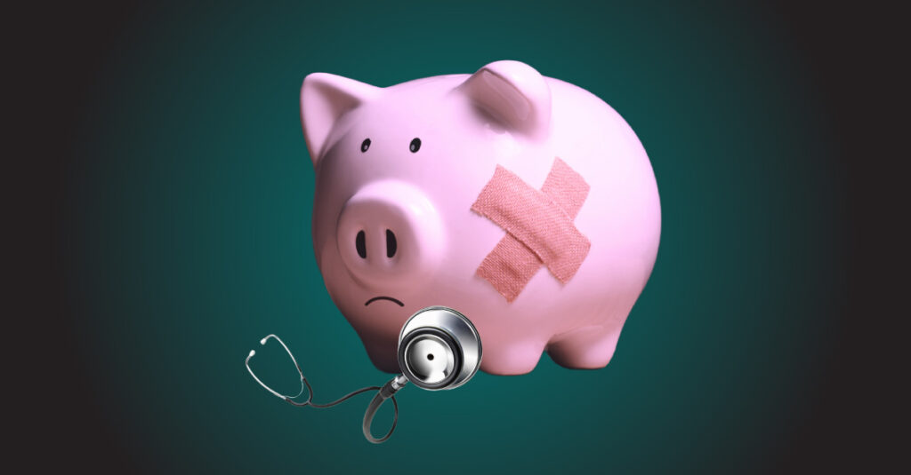

We have all heard the saying “Money doesn’t buy happiness.” However, evidence shows us that stress over finances takes a huge toll on your mental and physical health, increasing depression and anxiety. This is where financial literacy, as well as medical financial literacy, can help.
Why Should You Care About Financial Wellness?
Given the significant link between financial strain and mental health, improving financial literacy and managing your finances is essential to your well-being. Financial literacy includes more than how to budget, save money, invest, and manage debt. It also means understanding interest rates and credit scores. It includes retirement, insurance, and estate planning. However, what if you are insured and financially responsible but get hit by a bus or develop a serious illness? Through no fault of your own, you would suddenly be drowning in medical bills!
Medical Financial Literacy
If serious illness or injury occurs, even the most insured and financially responsible among us can end up with debt from medical bills and missed work. Medical expenses are perhaps the biggest threat to your nest egg and the number one cause of bankruptcy and debt in the U.S.
You will find no shortage of financial coaches, gurus, and advisors on the internet, as well as scary scammers. But what you won’t find in abundance are educators who teach medical financial literacy. Despite best efforts, our broken U.S. healthcare system often leaves you just one accident or illness away from a lifetime of debt. This is where Crush Medical Debt can help by teaching you to protect yourself through medical financial literacy.
What is Medical Financial Literacy?
Medical financial literacy is the ability to understand, navigate, audit, negotiate, and even eliminate medical bills and medical debt. It is also called healthcare financial literacy or patient financial literacy.
Patient financial literacy also includes health insurance literacy. The National Institute of Health defines health insurance literacy as the ability to seek, obtain, understand, and use insurance to seek appropriate health care services. It starts with mastering the vocabulary around coverage, networks, and cost-sharing terms, as well as choosing the right coverage for your needs and budget. Additionally, you must understand how to use your insurance to maximize benefits and minimize out-of-pocket expenses.
Using insurance can feel like an obstacle course with six in ten (58%) people experiencing problems using their health insurance, leading many to skip care altogether to avoid costs.
Healthcare financial literacy includes how to:
- Compare plans and coverage levels
- Estimate out-of-pocket expenses and cost-sharing
- Understand your plan’s benefits and exclusions
- Navigate your network, making sure both the facility and the doctors working with you are all in-network
- Understand your medical bills
- Understand your Explanation of Benefits and the forms you get from your insurance company
- Understand your legal patient rights and responsibilities
- Get referrals, preauthorizations, and estimates on future costs
- Communicate effectively and keep records of calls, letters, and emails with your insurance company and medical providers
- File claims and appeals
- Manage and track your deductible and out-of-pocket maximum
- Avoid getting buried in out-of-pocket costs
Let Crush Medical Debt Help
Crush Medical Debt is on a mission to bring financial stability through educational content. Crush Medical Debt teaches you how to Crush Medical Bills in 3 Steps, as well as creating educational content to save families from becoming victims of the U.S. healthcare system.
Follow our free blog articles, newsletters, and podcasts. We also have a book and masterclass. We welcome feedback and ideas for creating content that is useful, helpful, and relevant. You can contact media@crushmedicaldebt.com. Additionally, consider filling out our feedback survey to assist us in understanding audience needs.
This is part one of our three-part series on financial wellness. Our following articles will explore How to Remove Medical Debt from Credit Reports, and resources for help with financial planning and financial wellness.